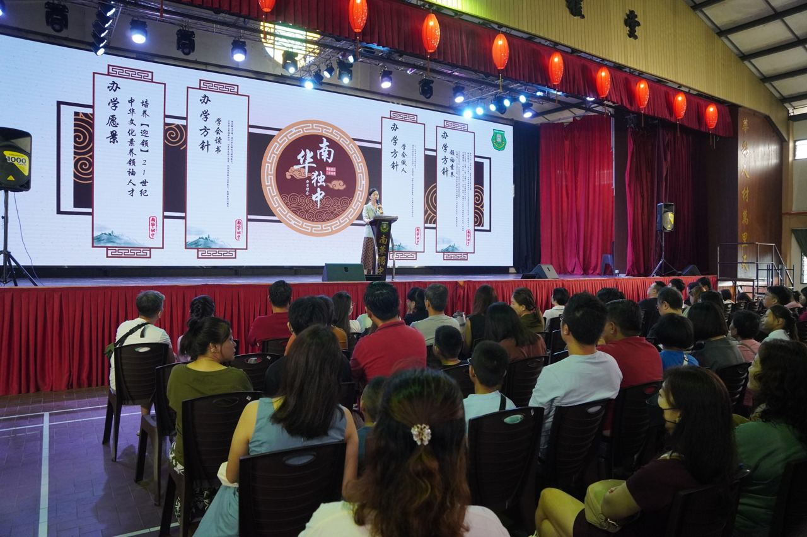
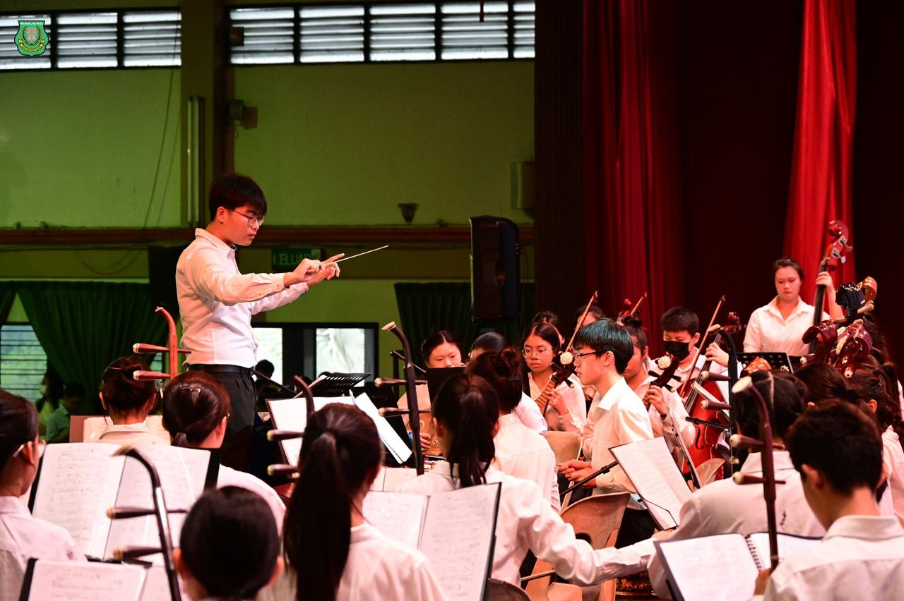
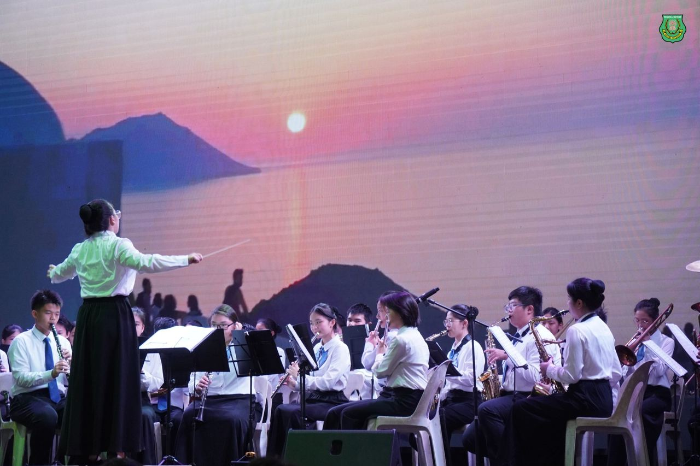
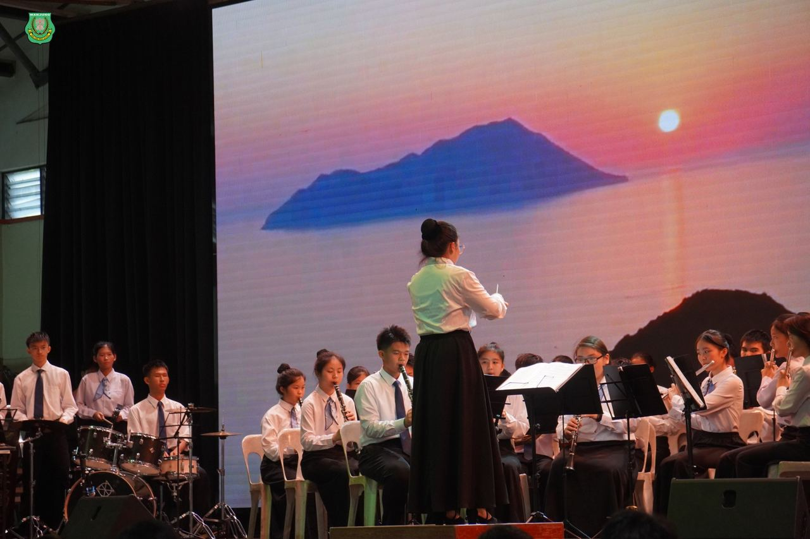
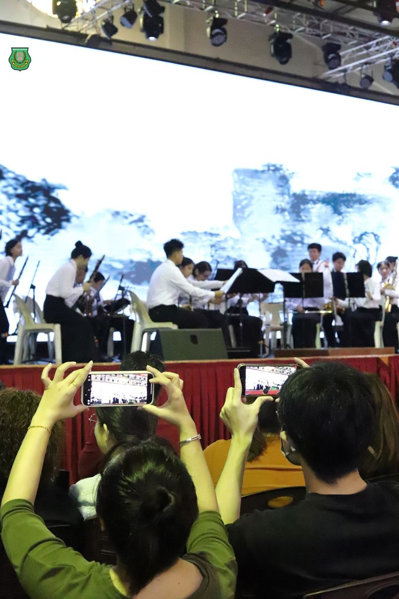
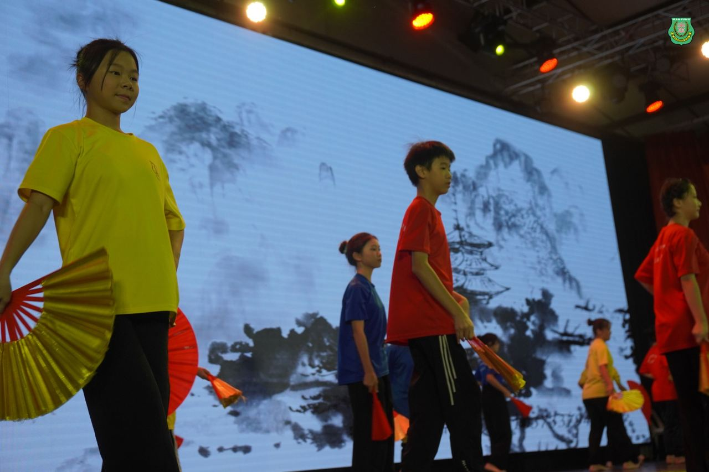
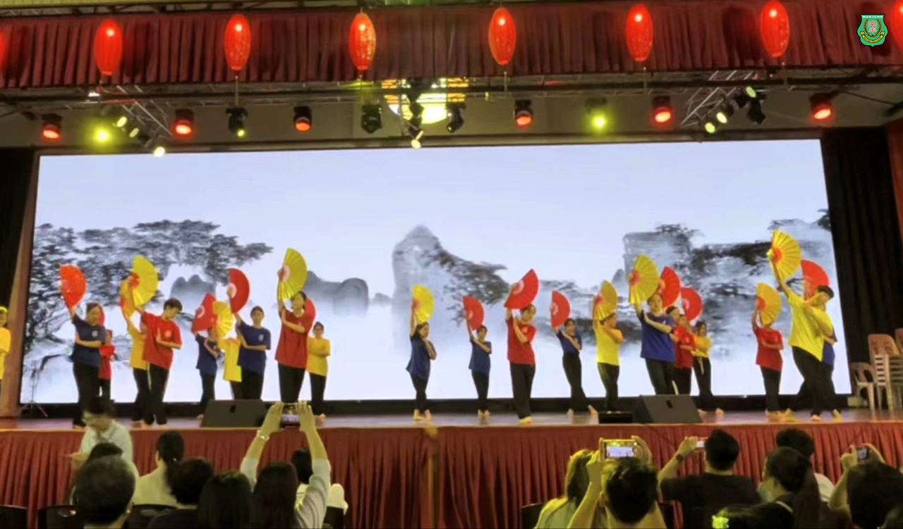
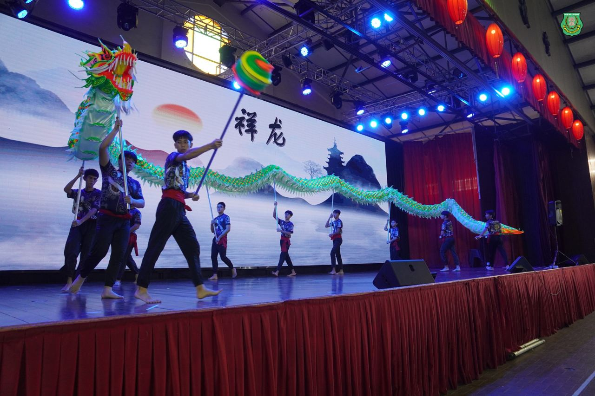

南华独中阳光家长日
南华独中阳光家长日
家校共同督促学生学习
南华独中于日前隆重举办阳光家长日，现场座无虚席，获得家长们的热烈支持。此活动不仅是展示学生上半年学术、联课、学会团体以及技职教育全方面的成果展示，更是安排了校长陈丽冰博士汇报学校发展与未来展望、班导师与家长会谈暨分发学生成绩单环节，让家长能够掌握了解孩子们的学习情况，凝聚校方、家长与孩子之间的联系。
当天活动丰富多彩，首先由学校五大表演团体，如华乐团、舞蹈团、管乐团、龙狮团以及二十四节令鼓带来精彩表演，现场掌声不断，气氛热烈。
校长陈丽冰博士在报告中回顾了过去南华独中半年由来的教学成果，并对老师以及学生和的努力给予了高度评价，与此同时也衷心感谢家长们始终愿意信赖校方的办学理念，为共同塑造孩子未来前景的配合与理解表示赞许。
阳光家长日的下半场活动则是班导师与家长进行会谈，学生在家长的陪同下详细了解孩子的学习情况，进而促进家校之间的沟通与合作。
本次家长日的另一大亮点是成果展，展示了学生们在选修课和学术课中的多项成果。选修课方面，中华（木刻，漂漆扇）、咖啡（咖啡与饼干）、美甲和室内种植等作品精彩纷呈，体现了学生们在各领域的创造力和实践能力。学术方面，三语学习和趣味科学展品也展示了学生们的学术成就和探索精神。
南华独中于即日起开始接受2025年新生报名，欲知详情或有意报名者，可以于上班期间拨打01164646267了解更多，或亲临南华独中教务处询问。
#阳光家长日 #联课成果 #学术成绩 #技职教育成果 #学习成果
#南华独中 #曼绒 #实兆远







